Configuration ¶
The following steps outlined are intended to be performed after completing the Getting Started guide. Therefore, you already have the infrastructure deployed into your AWS Account and ready to be configured.
Info
The following walkthrough uses Canvas as the LMS and Amazon Cognito as the Tool OIDC IDP. The information shown below will correlate to other LMSs and Tool OIDCs.
Setup configurations included below:
Note
The Output: <keys> mentioned in the following docs are specific values for your deployment. These can be found in the packages > cdk > output.json file if you followed the Getting Started guide or can be viewed in the console under the Amazon CloudFormation stack outputs.
LMS Platform Setup¶
Info
Uses Canvas LMS as the example.
Prerequisites:
Tool URI- The tool we are enabling LTI for using eLTI.Output: <keys>- From Getting Started guide
Creating Developer Key ¶
- In Canvas create a dev key by clicking on “Admin” on left
- Select “Developer Keys“ - URL should be simliar to [https://XXXX/accounts/X/developer_keys]
- Click on
+ Developer Keybutton and selectLTI Key
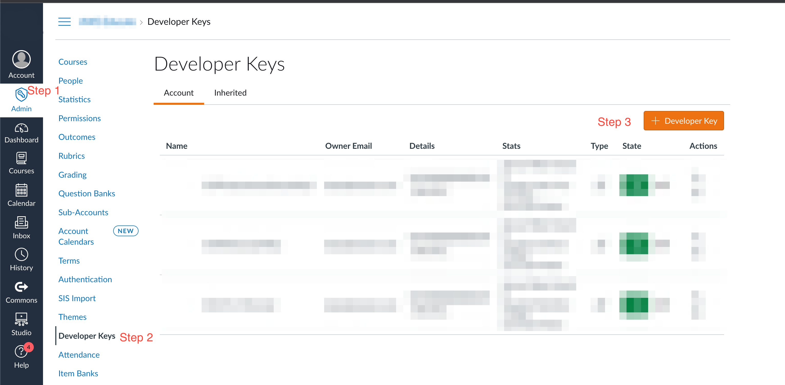
- Make sure the Method is
Manual Entry - Add a name for the key like
ExampleEnableLTIDevKey - Give it a Title and Description
- Enter the following:
Target Link URI- Enter Tool URIRedirect URI- EnterOutput: apiELTIURI*/launchOpenID Connect Initiation URL- EnterOutput: apiELTIURI*/login- Change JWK Method to Public JWK URL and enter the URL
Output: apiELTIURI*/jwks.json - In Additional Settings change Privacy Level to
Public -
Under
Link Selection→ Select Message Type to beLtiDeepLinkingRequest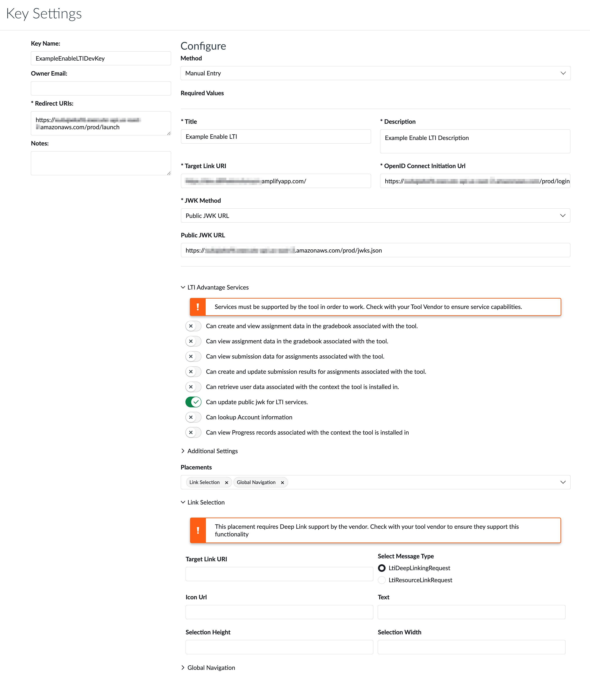
-
Click on Save button at the bottom right
- Save the
Client Idfor later use -
Switch the state of the Developer Key from Off to On
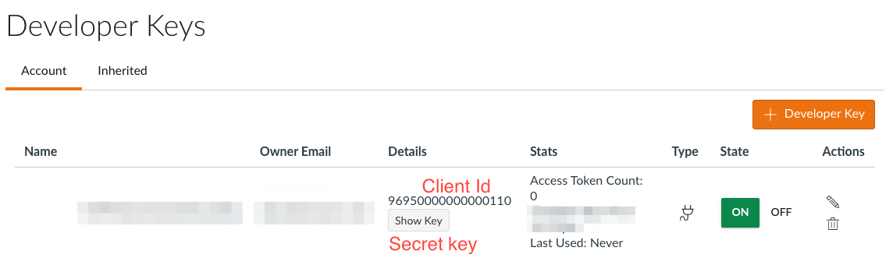
Saved for later steps:
Saved: Client Id
Adding as External Tool ¶
- After creating the developer key.
- Go to
Adminscreen and selectSettings,Apps, View App Centerand click on+App

- Change App creation config type to be By client id. Enter
Saved: Client Id.
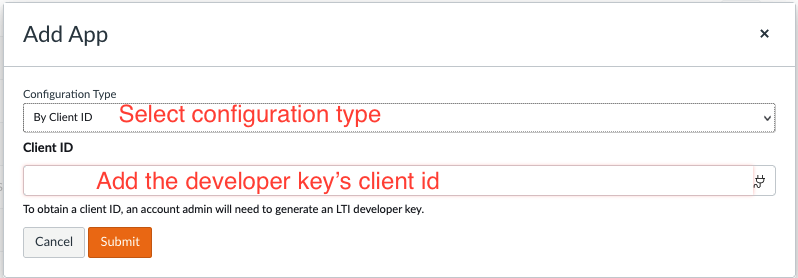
- After adding the app, get the save the
Deployment Idfor late use.
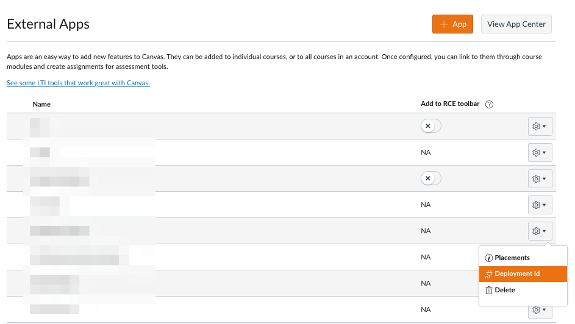
Section Saved Outputs:
Saved: Client IdSaved: Deployment Id
Tool OIDC IDP Setup¶
Optional
Only complete if you are configuring a Tool OIDC IDP.
Info
Uses Canvas LMS and Amazon Cognito as the example.
Prerequisites:
Tool URI- The tool we are enabling LTI for using eLTI.Output: <keys>- From Getting Started guideSaved: Client Id
Add a new IDP in Cognito
- Select the UserPool that your Tool is using.
- Go to
Sign-in experience→Federated Identity Providerand selectAdd Identity Provider
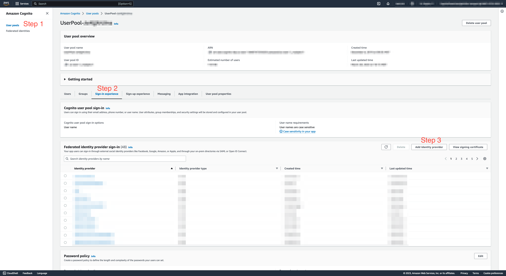
-
Add identity provider details:
-
Federated sign-in options: OpenId Connect (OIDC)
- Provider name: Enter IDP Name and save for later.
- Client Id: Enter
Saved: Client Id - Authorized scopes: Default value should be “openid”
- Attribute request method: POST
- Manual input
- Issuer URL: Since using Canvas in example, Enter https://canvas.instructure.com
- Authorization endpoint: Enter
Output: apiELTIURI*/authorizerProxy - Token endpoint: Enter
Output: apiELTIURI*/tokenProxy - UserInfo endpoint: Enter
Output: apiELTIURI*/tokenProxy - Jwksuri endpoint: _Since using Canvas in example, Enter https://sso.canvaslms.com/api/lti/security/jwks
*The Issuer and JWKS uri endpoints will be static for all platforms and be dependent on the LMS. Canvas values are provided above.
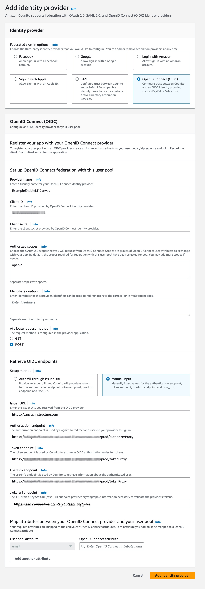
-
Add attributes. (User pool attribute → OpenID Connect attribute)
-
custom:LMS:ClientId → aud
- custom:LMS:DeploymentId → https://purl.imsglobal.org/spec/lti/claim/deployment_id
- custom:LMS:Endpoint → https://purl.imsglobal.org/spec/lti-ags/claim/endpoint
- custom:LMS:Issuer→ iss
- custom:LMS:TargetLinkUri→ https://purl.imsglobal.org/spec/lti/claim/target_link_uri
- email→ email
- username→ sub
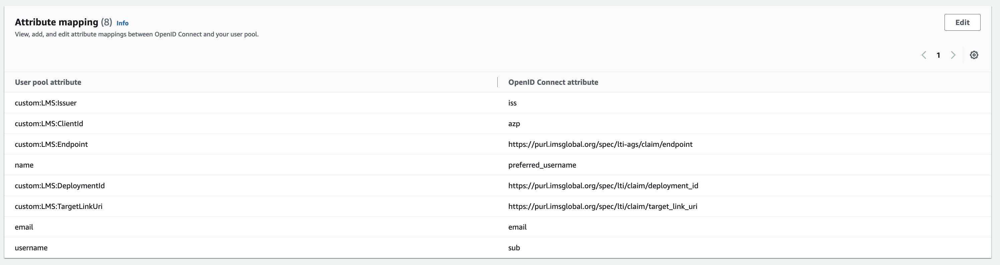
-
Add IDP to App client.
-
Navigate to App Integration. Save the
Cognito domainfor later. - Find your app client and open it. Save the
App Client IDfor later. - Edit Hosted UI.
- Select the newly added IDP (
Saved: IDP Name) from the Identity Providers list. - Save changes.
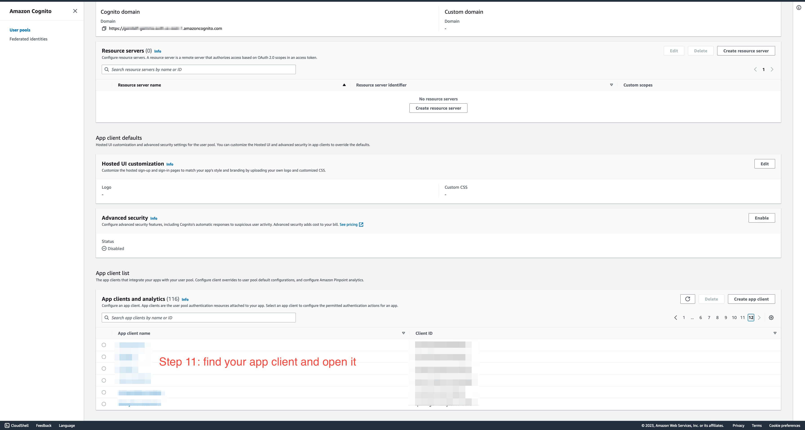
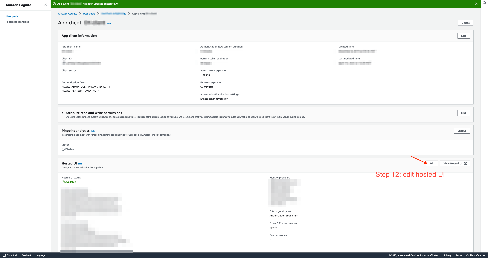
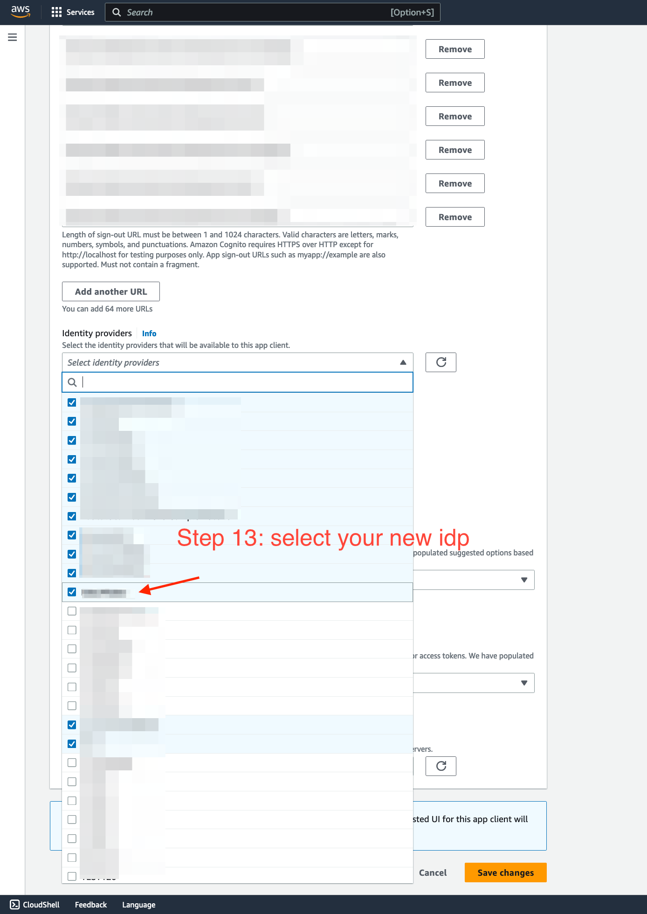
Saved for later steps:
Saved: IDP NameSaved: Cognito domainSaved: App Client Id- Different than the LMSSaved: Client Idfrom “LMS Platform Setup”
eLTI Configuration¶
Steps to configure the platform and tool inside of eLTI.
Info
Uses Canvas LMS and Amazon Cognito as the example.
Prerequisites:
Tool URI- The tool we are enabling LTI for using eLTI.Output: <keys>- From Getting Started guideSaved: Client IdSaved: Deployment IdSaved: IDP NameSaved: Cognito domainSaved: App Client Id
The following steps manually enter the data in the DynamoDB table. In addition to using the configuration API, you can see one way to automate these entries by referring to the integration test scripts in the code repository enable-lti/test/scripts/setupInteg.ts here.
Note: There are two Dynamo DB tables, these objects go into the Control Plane table. The Control Plane table utilizes single-table design.
Create the following entries in the Output: tablesELTIControlPlaneTable*
-
Create the LMS platform object.
-
Replace with the actual saved values:
<Saved: Client Id>withSaved: Client Id- Replace both entries
1 2 3 4 5 6 7 8 9 | |
-
Create the LMS platform object with deployment id.
-
Replace with the actual saved values.
<Saved: Client Id>withSaved: Client Id- Replace both entries<Saved: Deployment Id>withSaved: Deployment Id
1 2 3 4 5 6 7 8 9 | |
- Create the LMS tool entry.
- If using Tool OIDC IDP replace with the actual saved values.
<Saved: Client Id>withSaved: Client Id<Saved: App Client Id>withSaved: App Client Id<Saved: Cognito domain>withSaved: Cognito domain<Saved: IDP Name>withSaved: IDP Name<Tool Name>with text name of tool.<Tool URI>withTool URI1 2 3 4 5 6 7 8 9 10 11 12 13
{ "PK": "TOOL#<Saved: Client Id>#https://canvas.instructure.com", "data": { "LTIResourceLinks": [], "OIDC": { "clientId": "<Saved: App Client Id>", "domain": "<Saved: Cognito domain>/", "idpName": "<Saved: IDP Name>" } }, "id": "<Tool Name>", "url": "<Tool URI>" }
- If NOT using a Tool OIDC replace with the actual saved values.
<Saved: Client Id>withSaved: Client Id<Tool Name>with text name of tool.<Tool URI>withTool URI1 2 3 4 5 6 7 8
{ "PK": "TOOL#<Saved: Client Id>#https://canvas.instructure.com", "data": { "LTIResourceLinks": [] }, "id": "<Tool Name>", "url": "<Tool URI>" }
Done
eLTI is now configured with the needed platform and tool settings.
Go to the LMS to test if the flow is properly configured.